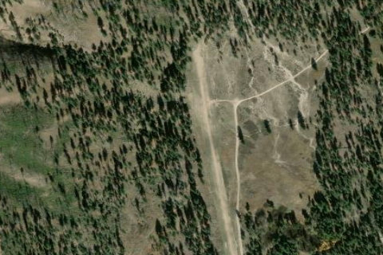

ATLANTA
55H · ID

Aerial imagery source: Esri, Vantor, Earthstar Geographics, and the GIS User Community
| Identifier | 55H |
|---|---|
| State | ID |
| Runway length | 2,460 ft |
| Runway width | 75 ft |
| Surface | TURF-DIRT |
| Runway | 16/34 |
| Elevation | 5,500 ft |
| Ownership | public |
| CTAF | 122.9 |
| Coordinates | 43.81351083, -115.13508166 |
Notes
[idaho_itd] State Airfield [shortfield] Location Overview Atlanta Airstrip sits about a mile northwest of the small, unincorporated community of Atlanta, tucked deep in the mountains of Elmore County in central Idaho. The town sits in the shadow of the Sawtooth mountain range, on the Middle Fork of the Boise River, and the airstrip occupies roughly 14 acres of high mountain terrain at a surveyed elevation of 5,500 feet MSL. It's a genuinely isolated spot — the town can only be reached by unpaved forest roads, so flying in bypasses a long, rough drive from Boise. Camping & Recreation On the way into town from the strip, you'll pass the USFS Riverside Campground, about half a mile from the end of runway 34. Both Power Plant Campground and Riverside Campground are run by Boise National Forest and operate from May to September on a first-come, first-served basis, with both sitting right along the river. Beyond camping, the area is known for good fishing along the Middle Fork of the Boise River, and the surrounding wilderness offers hiking and exploration of the historic mining district. Food and lodging are also available in town, including a rental cabin and a lodge with a bar and restaurant nearby. Notes & Warnings This is a serious backcountry strip meant for experienced mountain flyers. Pilots land on runway 34 and take off on runway 16, and landing or takeoff with unfavorable winds is not recommended. A go-around from final isn't possible due to high terrain, and the strip is recommended for use only by mountain-proficient pilots. Official notes reinforce that it's recommended for use by mountain-proficient pilots flying properly equipped, high-performance aircraft. Standard departure procedure is a right turn out down the Boise River, and there's no winter maintenance, so the field is effectively a warm-weather-only operation. The runway itself is a fairly short turf/dirt strip, and CTAF is 122.9 MHz. History Atlanta grew out of a gold discovery in 1863 by prospector John Stanley and his party, who initially tried to keep the find secret; when word leaked out, a rush followed the next year that established the town in earnest. Records are sparse, but the district is estimated to have produced over $16 million in gold and silver, with most of that coming after 1932 following the installation of a modern concentrator and a new road connecting Atlanta to Boise. A 10-acre historic district with a dozen contributing buildings was listed on the National Register of Historic Places in 1978, and many mining-era cabins and homes still stand today, with the town keeping a small seasonal population. The airstrip itself is comparatively modern — it was activated in August 1982 and is owned and maintained by the State of Idaho's Division of Aeronautics, giving pilots a practical alternative to the long, washboarded backcountry road for reaching this still-living relic of Idaho's gold rush era.